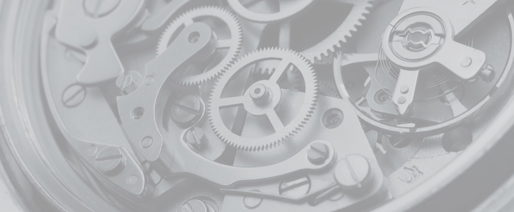

АО «ВО «Машиноимпорт» образовано в 1933 году, специализируется на оказании содействия в строительстве предприятий топливно-энергетического комплекса, импорте и экспорте комплектного и разрозненного оборудования и запасных частей, экспорте сырьевых товаров.
Опираясь на сложившиеся деловые связи с отечественными и зарубежными партнерами, мы оказываем услуги по следующим направлениям:
обустройство нефтяных месторождений, поставка машин и оборудования для строительства нефте-, газо- и продуктопроводов, насосно-компрессорных станций, резервуарных парков, нефте- и газоперерабатывающих заводов, терминалов, включая командирование высококвалифицированных специалистов для монтажа и наладки оборудования;
импорт и экспорт машин, оборудования и технологий для различных отраслей промышленности, реализация инвестиционных проектов, реконструкция ранее построенных объектов, поставка запасных частей;
экспорт нефти и нефтепродуктов, лесоматериалов, проката черных и цветных металлов, угля и других сырьевых товаров;
реализация различных экологических проектов, импорт оборудования для охраны окружающей среды в условиях городского коммунального хозяйства, включая оборудование для полного цикла переработки мусора и отходов, очистки сточных вод и подготовки питьевой воды;
организация капитального ремонта машин и оборудования в России и за рубежом, экспорт и импорт бывшего в употреблении оборудования;
импорт продовольственных и промышленных товаров, в том числе в счет погашения задолженности по государственным кредитам, представленным бывшим СССР;
оказание консультационных, информационных и других услуг при поиске деловых партнеров, исследование зарубежных товарных рынков, выполнение комплексной экспертизы предконтрактных предложений, включая конъюнктурные, валютно-финансовые и другие вопросы.